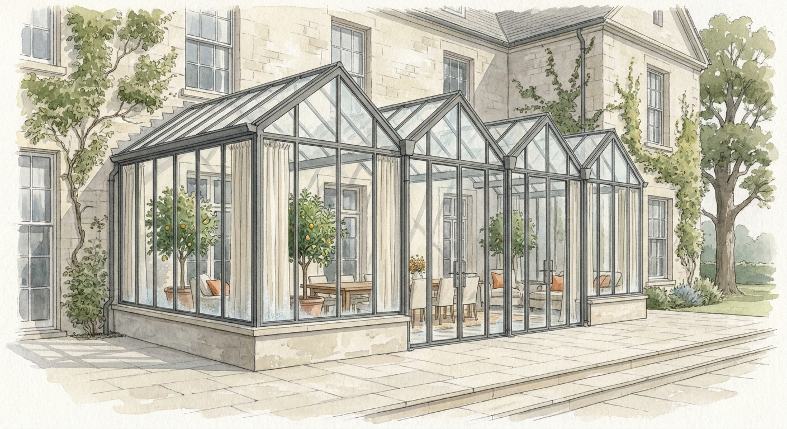

Small · attached to the house · winter garden
The Conservatory
A garden you walk into from the kitchen.
Tea in January. Lunch in April. Mature potted citrus in the corner, a long table for twelve, linen curtains drawn against the morning light. The garden indoors when the land goes cold — a room that belongs to the house but lives like a garden. Less about harvest, more about the quality of a Tuesday morning.
Additional details
- What grows here
- Potted citrus, tender plants, winter herbs, cut flowers.
- When you’re in it
- Daily, as a room.
- Best for
- Land or climate that won’t carry a free-standing glasshouse, or a buyer who wants the greenhouse experience woven into the house itself.